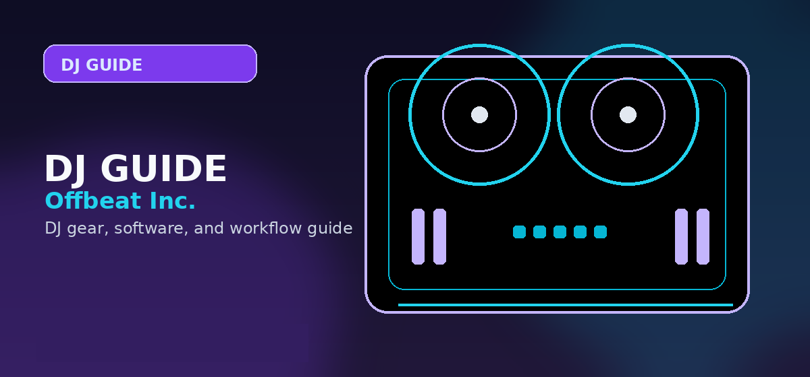

Splice vs Loopmasters: Which is the Best Sample Subscription for EDM & Hip Hop in 2026?
Splice vs Loopmasters 2026: subscription pricing, sample quality, royalty terms, and which platform wins for EDM and hip-hop producers. Honest comparison.

Disclosure: This page uses affiliate links. We may earn a commission at no extra cost to you. Full disclosure →
In 2026, the barrier between a bedroom demo and a chart-topping hit is often the quality of the sonic palette. For producers specializing in EDM and Hip Hop, the debate usually narrows down to two titans: Splice and Loopmasters (via Loopcloud). Gone are the days of buying monolithic 2GB sample DVDs; the industry has shifted toward cloud-based, royalty-free subscriptions that allow for surgical precision in sound selection. Whether you are layering punchy 808s for a trap beat or searching for the perfect ethereal synth lead for a progressive house track, choosing the right platform determines your workflow efficiency. This guide breaks down the current state of both services to help you decide where to invest your monthly subscription budget for maximum creative ROI.
Splice: The Cloud Giant's Credit System
Splice remains the industry standard for modern Hip Hop and Future Bass production. Its "credit" system is its greatest strength, allowing producers to cherry-pick individual kicks, snares, or loops without committing to a full pack. In 2026, their AI-driven "Similar Sounds" engine has become nearly psychic, suggesting samples that match the timbre and mood of your current project instantly. For Hip Hop producers, the access to official artist packs (like KSHMR or Murda Beatz) provides a professional polish that is hard to replicate. However, the credit limit can feel restrictive during heavy composition phases, often forcing users to upgrade to more expensive tiers just to maintain their momentum.
Loopmasters & Loopcloud: The Curated Powerhouse
While Splice focuses on the "atomized" sample, Loopmasters—and its cloud integration, Loopcloud—focuses on professional curation. Loopmasters is legendary for its deep roots in the EDM scene, offering high-fidelity recordings from world-class studios. Loopcloud allows you to sync samples to your DAW's tempo and key in real-time before you download them, which is a massive advantage for EDM producers building complex melodic structures. Their packs tend to be more cohesive, providing a consistent sonic "vibe" across a whole kit. The downside is that the interface can feel slightly more cluttered than Splice, and the library, while elite, lacks some of the sheer volume of "internet-native" sounds found on Splice.
Genre Battle: EDM vs Hip Hop
When it comes to Hip Hop, Splice is the undisputed king. Its library is saturated with the exact textures required for Trap, Drill, and Lo-Fi, with a focus on the "sampled" aesthetic. If you need a specific 808 glide or a crisp hi-hat roll, Splice is the fastest route. Conversely, Loopmasters dominates the EDM landscape, particularly in Tech House, Melodic Techno, and Trance. Their samples often sound "more expensive" because they are frequently recorded through high-end analog outboard gear. While Splice has plenty of EDM content, Loopmasters provides the professional-grade consistency required for club systems where low-end clarity and high-end sheen are non-negotiable.
Pricing and Licensing in 2026
Both platforms operate on a royalty-free model, meaning once you download a sample, you own the right to use it in commercial releases forever—even if you cancel your subscription. Splice’s "Creator" plan typically sits around $12.99/month, granting a set amount of credits. Loopcloud offers various tiers, often starting around $9.99/month, with a similar credit-based system for permanent downloads. The key difference is "rental" vs "ownership"; while both allow permanent downloads, Loopcloud’s integration allows you to use samples in your project and only "buy" them with credits once you know they actually work in the mix, reducing wasted spending.
Comparison Summary
| Feature | Splice | Loopmasters (Loopcloud) |
|---|---|---|
| Best For | Hip Hop, Trap, Pop | EDM, House, Techno |
| Discovery | AI-driven / Similar Sounds | Real-time DAW Sync / Key-matching |
| Pricing | ~$12.99/mo (Creator) | ~$9.99 - $14.99/mo |
| Curation | High volume, Artist-led | High fidelity, Studio-curated |
| Pros | Fast workflow, massive variety | Superior audio quality, better EDM focus |
| Cons | Credit limits can be tight | Steeper learning curve for software |
Quick Verdict
Choose Splice if: You are a Hip Hop or Pop producer who needs a massive variety of sounds and a lightning-fast, intuitive workflow to find "that one sound" quickly.
Choose Loopmasters/Loopcloud if: You are an EDM producer who prioritizes studio-grade audio fidelity and wants to audition samples in sync with your project's key and tempo before downloading.
*
Ready to upgrade your sound library? Check out the latest subscription deals and limited-time artist bundles via our affiliate links below to get started with the best royalty-free sounds of 2026.
Our pick: Splice for breadth and flexibility; Loopmasters for depth in specific genres (House, Techno, D&B, UK Garage). For mainstream Hip Hop, Trap, and Pop production, Splice is unmatched. Most serious producers subscribe to both. Shop portable SSDs for sample libraries on Amazon →
Shop on Amazon
Bring your sample pack library to life with hardware — samplers on Amazon.
Making the Right Choice for Your Setup
The best option in this comparison depends on your workflow, current gear, and performance goals. Use this framework to make your final decision:
| Your Situation | Recommended Choice |
|---|---|
| You already own compatible hardware and don't want to switch | Stay with what integrates best — the ecosystem matters more than the specs |
| You are starting fresh with no existing gear lock-in | Choose whichever option has the stronger free tier to test before committing |
| You play club gigs or want to go professional | Prioritise industry-standard tools that will work on any provided booth setup |
| You are a home producer or bedroom DJ | Focus on workflow and learning resources rather than prestige brand choices |
| You want the most active online community for support | Check Reddit r/DJs and YouTube tutorial counts — community size matters for self-teaching |
If you are still undecided after reading the comparison above, the most common advice from working DJs is: pick one and get proficient, rather than switching repeatedly. Mastery of any professional tool beats superficial knowledge of many.
Community Resources and Where to Learn More
The best advice for your specific situation often comes from peers using the same tools. These communities are active and beginner-friendly:
- Reddit r/DJs — Detailed gear and software discussion, weekly questions threads, and honest user feedback from all skill levels
- Reddit r/edmproduction — Production-focused community with regular threads comparing software and workflow strategies
- DJ TechTools forum — One of the most established independent DJ communities with decades of archived discussions
- YouTube — Search for "[product name] beginner tutorial 2026" to find recent walkthroughs before purchasing
Where to Find Additional Support
These communities provide active, free support for users of all the platforms covered in this comparison:
- Reddit r/DJs — Weekly questions megathread; use search before posting as most common questions are thoroughly answered
- YouTube — Search "[platform name] tips [year]" for recent workflow tutorials covering the current version
- Manufacturer Discord servers — Direct access to beta testers, power users, and occasional developer responses
Additional Resources and Decision Checklist
Before making your final selection, work through this checklist to ensure you have covered the key considerations specific to this category:
- Check whether your existing hardware has native integration with your preferred platform before switching ecosystems
- Download and install the free trial versions of both platforms before committing to a purchase decision
- Search Reddit r/DJs for the specific combination of your hardware and each software option to find real-world compatibility reports
- Look at the most recent firmware and software release notes — update frequency signals how actively each product is maintained
- Ask in DJ communities which platform the working DJs in your genre actually use — industry standards vary significantly by scene
Frequently Asked Questions
Is Splice or Loopmasters better for sample packs?
Splice is better for producers who want a subscription model — $7.99–$13.99/month buys credits to download individual samples from millions of sounds. Loopmasters suits producers who prefer buying full packs outright (£15–£35) and owning them permanently. Both are royalty-free for commercial use.
How does Splice royalty-free licensing work?
All sounds downloaded from Splice are cleared for commercial use — you can release music with them on any platform and keep 100% of royalties. The exception is sounds labeled 'exclusive' or with custom licensing terms shown on the sample page. Always check licensing notes before downloading for sync (TV/film) use.
Can I use Loopmasters samples in commercial releases?
Yes. All Loopmasters samples carry a royalty-free license for music production and commercial release. You cannot re-sell, redistribute, or create other sample packs from Loopmasters content. For sync licensing (TV, film, ads), verify the specific pack's license terms as some packs have additional restrictions.
How many credits does a Splice Basic plan give you?
Splice Basic ($7.99/month) gives 100 credits per month. Most standard samples cost 1 credit; premium and exclusive sounds cost 2–3 credits. At 100 credits, that's roughly 80–100 individual samples per month — sufficient for one project. The Splice Pro plan ($13.99/month) gives 300 credits.
Are there free alternatives to Splice and Loopmasters?
Yes. Looperman.com offers free royalty-free loops uploaded by producers. Freesound.org has field recordings and sound effects under Creative Commons. Bedroom Producers Blog curates free sample packs regularly. YouTube Audio Library includes free stems. For budget producers, these free sources combined with one Splice month can cover most production needs.